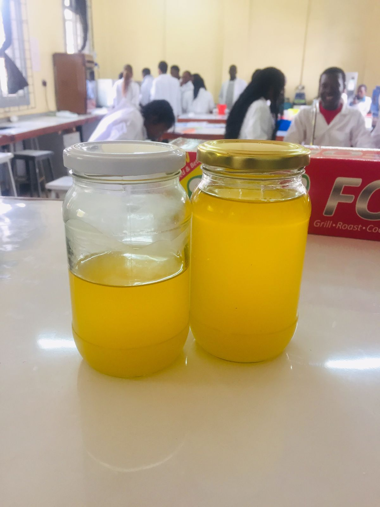
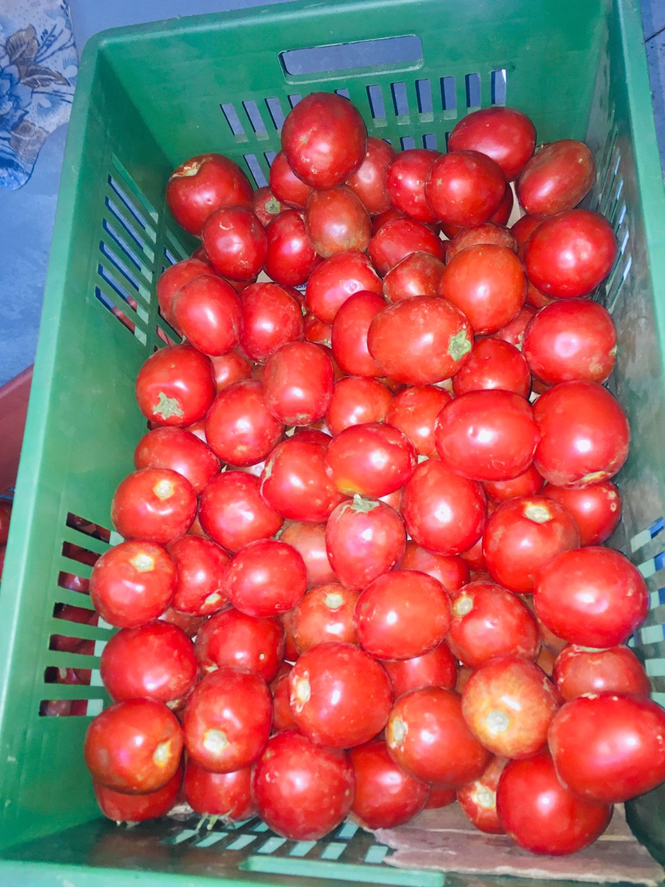

Focusing on the safety of the customers and championing food safety and food security in Africa,
more so to connect to the power of brands that we serve.


To develop outstanding products that meet the quality standards and nutritional parameters focusing on the market needs & customer needs for our clients.
Focusing on the safety of the customers and championing food safety and food security in Africa,
more so to connect to the power of brands that we serve.
To be the best Africa’s powerhouse for innovations and incubations in food science and technology
bringing out dynamic food brands by attaining their highest level.
certification.

We are a consulting firm in the field of agricultural value addition focusing on Training and consultancy in
Food Safety Management Systems (FSMS),
Quality Management Systems (QMS),
Food processing and preservation and Food science and Technology.
We have qualified and competent professionals with years of experience in the field of our expertise,
who are dedicated and committed to achieve our objectives and our vision.
We ensure to be up to date with the changes and current technological advancements happening in food systems.

Read More
We offer comprehensive solutions to food and beverage products and production system by developing sustainable,
scalable and profitable products maintaining and elevating the quality according to the set standards.
We assist in designing unique solutions across all product categories by providing expert support for all stages of your food innovation journey.

Read More
New Product development and formulation (Research and Development)
Implementation of relevant food safety pre-requisite programs & standard operating procedures.
Food safety auditing (HACCP, TACCP, VACCP).
Advisory and implementation of food safety standards.
Kenya Bureau of Standards (KEBS) Certification and implementation advisory.
Market segmentation and traceability of products
Agricultural value addition and food security matrix
Shelf-life analysis and microbiological analysis.

Read More